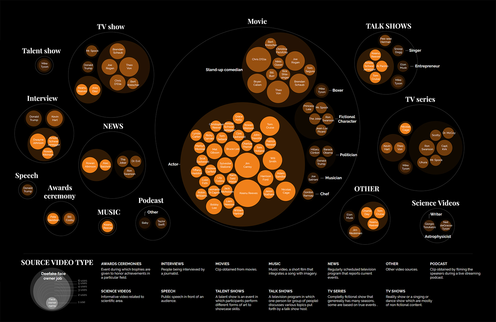

The world is constantly subdued to change but never before has the pace of development been so rapid.
Society is continuously introduced to new technologies and it seems rather impossible to keep up to
date. Recently we have been introduced to Artificial Intelligence and its highly mysterious Neural
Networks. The time of tangible technology is long gone, but are we now entering an era where tech
obtains human properties? We are talking about "Intelligence" and "Neural Networks", words that before
have only been assigned to organisms. Somewhere behind all these seemingly natural layers, the technical
"DNA" is still computer code, written by us humans. Have we increased the distance to society by
mystifying these developments? Media tend to write about them and show their power rather than to show
their use. In the name of proper journalism, we must, therefore, familiarize ourselves with their
practice and communicate our habituation to you.

From our research into deepfakes we learned that there is a gap between what the media writes
and
what is actually out there. The technology is portrayed as a great potential threat whilst the
internet is full of innocent amateur creations intended for fun. We have discovered that there
are
many YouTube channels that create deepfakes of celebrities and movie fragments.
Yet, over 90 percent of the deepfakes are pornographic and certainly harmful to their targets, but they are more or less acknowledged by their victims. The quality is often low and their context hard to believe, these videos are commonly considered fake. Those who secretly peruse these sites might merely desire to inspire their imagination rather than to hunt for realism. There is something we can learn from the way society has accustomed to these outskirt videos. Their overwhelming presence has enforced a resilience that our general civilization is still lacking.
The ability to manipulate still-images goes way back and today no one is concerned about Photoshop anymore. Most people will name Photoshop when they encounter an image that is hard to believe. Those who are familiar with the software have developed an eye for its traces and have an idea of its affordances and constraints. We can say that society has shifted its trust from images to videos, though technologies have caught up and our trust in information is challenged again.
Yet, over 90 percent of the deepfakes are pornographic and certainly harmful to their targets, but they are more or less acknowledged by their victims. The quality is often low and their context hard to believe, these videos are commonly considered fake. Those who secretly peruse these sites might merely desire to inspire their imagination rather than to hunt for realism. There is something we can learn from the way society has accustomed to these outskirt videos. Their overwhelming presence has enforced a resilience that our general civilization is still lacking.
The ability to manipulate still-images goes way back and today no one is concerned about Photoshop anymore. Most people will name Photoshop when they encounter an image that is hard to believe. Those who are familiar with the software have developed an eye for its traces and have an idea of its affordances and constraints. We can say that society has shifted its trust from images to videos, though technologies have caught up and our trust in information is challenged again.
Aim
As a reaction to this process we have created this website based on two goals:
Bringing deepfake technologies to the people.
Providing people with the tools to recognize them.
Just as photoshopped images have become part of our culture we can re-adjust to the existence of
deepfake technology. The process of creating this website has been a journey for our team. The many
deepfakes we have created have put the technology into perspective. We have learned that the
algorithm is a new tool that is part of a bigger process. Making a deepfake is like dealing with a
black box in the project, as if you bring your footage away for a few days and afterwards receive
raw material that you can turn into a video. Overtime we developed a feeling for the impact of
content characteristics and were able to improve the quality of our results. Not only has our view
of the technology become more practical, but it has also shown its limits. By exposing our work and
elaborating on our lessons we want to give the visitor what this project has given to us.
The Website
Throughout this website, you will encounter a series of deepfakes that tell you the story of our
research. The deepfake videos introduce the visitor to the complexity of the algorithm and how its
functioning leaves traces on the output. By decomposing the process of creating a deepfake video and
showing how different variables impact the output quality, we intend to have our audience develop an
understanding of the technology’s real-world capabilities. In addition, we show the limits of the
algorithms and how this knowledge can be used to recognise deepfakes. Towards the end of the site, the
discussion will evolve along with an increase quality for deepfake samples. Each page contains a set of
icons that point out the points of recognition and a button that unfolds a technical narrative including
details about the video. There are also three experiments included in the website that compare the
different outcome for a single parameter change. At last, there are three deepfake videos, which come
straight from the internet, that relate to our previous research and show what one can find online. From
the overall experience, the visitor will familiarise oneself with the technology in a similar way to
working hands-on.

Future
Will we also have to let go of our trust in video content? As we discuss, not all video content can
easily be deepfaked. Though, we do need to decentralise our trust and be very critical about our sources
and their context. Compared to the past we are much more connected and less dependant on a single image
or video. People have also been able to falsely 'verify' information via networks of fake profiles. Some
might remember Luka Magnotta who became famous for killing cats on the internet (recently featured in a
Netflix documentary). He was able to mislead his investigators by spreading fake information via many
fake profiles. Eventually, any progress will get caught up by falsification therefore it is important to
not alienate the technology and be able to recognize its functioning.
Who are we?
This project was created as part of the final synthesis laboratory of the master's program in
Communication Design at Politecnico di Milano. Our different cultural backgrounds gave this website a
different taste, for that we all came from different worlds, Italians, Dutch, Argentinian, Chinese, and
Lebanese.
A special thanks to Nic that was generous in provoiding us with additional computer power.
A special thanks to Nic that was generous in provoiding us with additional computer power.